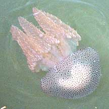
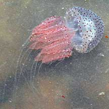

|
|
| jellyfish text index | photo index |
| Phylum Cnidaria > various classes | jellyfish |
| Mangrove
jellyfish Acromitus sp. Family Catosylidae updated Sep 2025 Where seen? This energetic little jellyfish is sometimes seen in large numbers near mangrove, e.g., at the mouth of mangrove streams, and in estuarine seagrass meadows on our Northern shores. Features: Bell about 6-8cm in diameter. Each fat sausage-like oral arm has a long 'tail'. Moves in short bobs as it energetically contracts its small bell. Status: It is listed as Vulnerable at 2024 in the Singapore Red Data Book. |
|
 Pulau Ubin, Apr 09 |
 Chek Jawa, Apr 08 |
| Mangrove jellyfishes on Singapore shores |
On wildsingapore
flickr
|
| Other sightings on Singapore shores |
 |
| Pasir
Ris mangroves, Dec 10. mangrove jellyfish from SgBeachBum on Vimeo. |
| Acknowlegement With grateful thanks to Dr Michael N Dawson of the University of California, Merced for identifying this jellyfish. Links
|